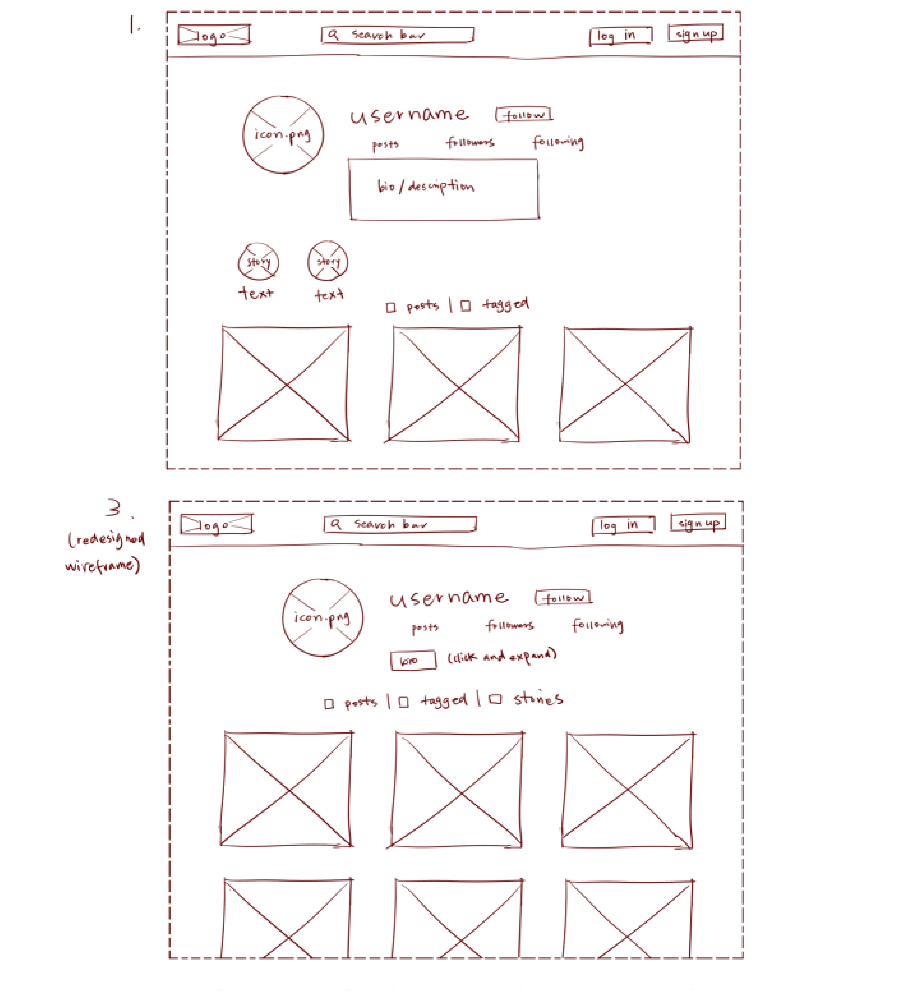

Using the favorite website you chose in homework 1, create a wireframe for one page of it using pen/paper, PowerPoint, or any your tool of choice. (use the 'img' tag!) Make sure to let us know what the name of your website is (Use the 'p' tag!)
Try to improve the website you've chosen, and create a redesigned wireframe of one page for the same website using the principles of visual hierarchy that you learned from the article.
What is the goal of the website? Who is it intended for? How does the design accomplish this? Write 2-3 sentences answering these questions. (Use the 'p' tag again!)
The goal of the website is to host (mostly) free live streaming content and videos with monetized benefits and to allow live discussion of this content. This website is intended for those who want to consume live streams from various content creators. The design, while quite information heavy, allows you to both view/send messages in the chat and see other channels that you can watch while not taking away (and is collapsible) from the most important part of the page, which is the current streamer you are watching (framed directly in the middle of the page with stream information and a subscription button highlighted at the bottom).
Write 2-3 sentences about what problems your redesign addressed, and how it solved them.
I honestly think the current design of the stream page is good, so I mostly just redesigned nitpicks I had, such as reducing unnecessary information (viewers don't need to see offline channels in the following list and recommended channels can be reduced to one category) and rewording a few things ("Chat" to "Send"). Probably the biggest problem I had was that it is not intuitive how you would see the "About Me" and panels section while watching a stream (you have to scroll), so I added a button near the follow and subscribe button on the default view that would jump to this section.
NOTE: Make sure to include the wireframe images in the website and don't just put it in your assets folder!
Your wireframes should look something like this:
